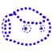
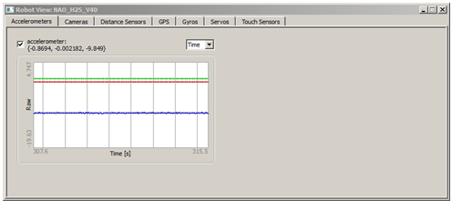
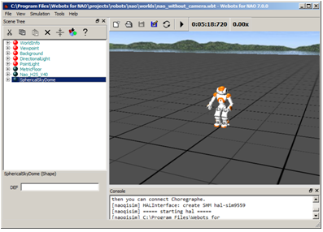
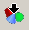
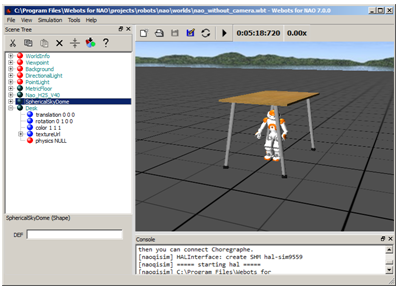
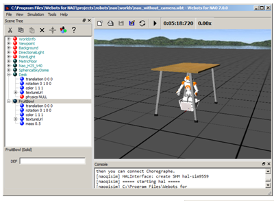
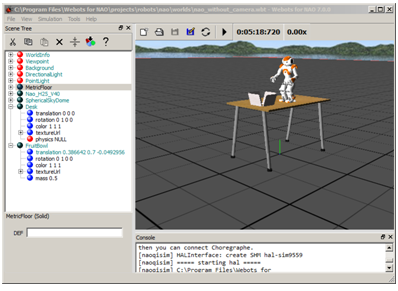

Webots for NAO¶
What is Webots for NAO¶
Webots for NAO is a specific release of Webots 7, exclusively dedicated to the use of a simulated NAO.
It offers predefined NAO simulations with their ready-to-use controllers.
What it is not¶
Webots for NAO is a lite version of Webots, it is not designed to let you use other robots nor create new robot controllers.
Installing Webots for NAO¶
To install Webots for NAO:
| Step | Action |
|---|---|
Retrieve the installer Webots for NAO for your operating system:
You can download the latest release from the Aldebaran Community Website. |
|
| Uninstall completely any old version of Webots. | |
Launch the installer then follow the step-by-step instructions. For further details or in case of trouble, see the Chapter 1: Installing Webots in Webots online user guide here: http://www.cyberbotics.com/guide/ |
Getting started¶
Launching a simulated robot¶
| Step | Action |
|---|---|
| Launch Webots for NAO. | |
Choose File > Open World... and select the file nao.wbt located in [Webots directory]\projects\robots\nao\worlds. |
Connecting Choregraphe to the simulated robot¶
| Step | Action |
|---|---|
| Launch Choregraphe. | |
| Choose Connection > Connect to or click the Connect to button. | |
Select your simulated robot (the name should include the name of your computer). Its icon should be: In Choregraphe, you can now:
|
Testing a behavior in Webots for NAO¶
| Step | Action |
|---|---|
Make sure you have launched a simulated robot and have connected Choregraphe to it. For further details see: |
|
In Choregraphe, create a behavior. For example, test the Tai Chi Chuan box. |
|
Make sure the Stiffness is on:  should be red . should be red . |
|
Click the |
|
Try to modify your point of view. For further details, see: How do I navigate in 3D world? in the Help menu. |
 Play button and follow the behavior both in Choregraphe
and in Webots for NAO.
Play button and follow the behavior both in Choregraphe
and in Webots for NAO.Monitoring the simulated NAO¶
| Step | Action |
|---|---|
In Webots for NAO, double-click the robot. The panel below appears.  |
|
| Choose one of the tabs and select the data you want to monitor. |
Customizing NAO’s worlds¶
Adding an object¶
Let’s add a table, for example:
| Step | Action |
|---|---|
Make sure the simulation is stopped. Otherwise, choose, Simulation > Stop then File > Revert World. |
|
In the Scene Tree, select the last node.  |
|
Click the  Add a new object button and select this object: PROTO > objects > indoor > tables > Desk (Solid) 
|
|
Click the Add button.  |
Moving objects¶
Let’s play with objects in order to learn how to move them.
| Step | Action |
|---|---|
Make sure the simulation is stopped. Otherwise, choose, Simulation > Stop. |
|
| In the Scene Tree, select the last node. | |
Click the Add a new object button and select this object: PROTO > objects > indoor > fruits > FruitBowl (Solid) |
|
Click the Add button.  |
|
Try to put the fruit bowl on the table. For further details, see: How do I move an object? in the Help menu.  |